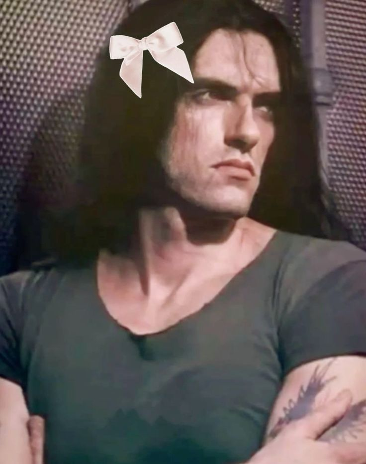
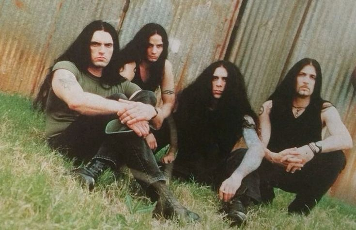

Історія групи
Петрус Томас Ратайчик народився 4 січня 1962 року у Брукліні (Нью-Йорк). Його батько, Пітер, був польського походження, а мати, Анет - шотландсько-ірландського та італійського. Зовні був дуже схожий зі своїм батьком, як на зріст, так і на риси обличчя. Пітер мав п'ять рідних сестер — Аннет, Барбару, Патрицію, Памелу і Кеті. Пітер казав, що вони навчили його, як треба поводитися з жінками. У шкільні роки Пітер був сором'язливим і самотнім, йому не подобалася школа, і компанії своїх ровесників він вважав за краще свою сім'ю. Коли йому було 12, його сестра вирішила давати своїй доньці, його ровесниці і йому уроки гри на гітарі. А оскільки він намагався у всьому випередити свою племінницю, то він дуже старався і в результаті полюбив цю справу.
Type O Negative була заснована у 1989 році в Брукліні, Нью-Йорк. Група швидко здобула популярність завдяки своїм важким, атмосферним трекам, а також за допомогою харизматичного лідера Пітера Стіла. Їхній стиль включає елементи готичного року, важкого металу і doom metal.
Лідером гурту був Пітер Стіл, який відповідав не лише за музику, але й за тексти. Його характерний вокал став візитною карткою колективу. «Вампірський» образ цього двометрового велетня привернув увагу прекрасної половини людства, але мало хто знає, що рання творчість Пітера була далеко не тим, що принесло йому славу.
Рання твочість
Все почалося у 1980-х, коли в моді був треш-метал, тож не дивно, що Пітер Стіл почав свою кар'єру саме в цьому жанрі. Його першим гуртом був Falliout, який він створив разом зі своїм другом Джошем Сілвером, граючи простий метал і здобувши певний успіх у публіки. Гурт розпався після випуску міні-альбому Batteries Not Included.
Невдовзі після цього Стіл створив другий гурт, Carnivore, творчість якого можна віднести до американської хвилі спід/треш-металу. Гурт грав агресивну музику, яка не мала нічого спільного з пізнішою творчістю Стіла.
Тексти пісень Carnivore торкалися політичних та релігійних питань, які хвилювали багатьох молодих музикантів. Після двох альбомів, на яких гурт здобув популярність, Стіл вирішив заморозити проект. Наступні два роки музикант працював рейнджером у парку, перш ніж зайнятися музикою.
Type O Negative — народження
Повернувшись до шоу-бізнесу в 1991 році, він вирішив створити новий проект зі своїм давнім другом, барабанщиком Селом Абрускато. До гурту приєдналися друзі дитинства клавішник Джош Сілвер (який грав разом з ним у підлітковому гурті Fallout) та гітарист Кенні Хікі. Названий «Type O Negative», квартет записав лише одне демо, яке принесло їм контракт на п'ять альбомів з лейблом Roadrunner Records. Вже в першій своїй роботі гурт продемонстрував прагнення до епічних пісень з похоронним і готичним підтекстом.
Type O Negative здобули великий успіх після випуску свого другого студійного альбому «Bloody Kisses» у 1993 році. Платівка стала платиновою, що допомогло сформувати унікальний стиль гурту. Для андеграундного метал-гурту це була сенсація, від якої музиканти могли відштовхуватися для досягнення успіху в майбутньому.
Критики відзначали вплив «The Beatles», який можна було почути в альбомі. Водночас, платівка знову тяжіла до меланхолійного готичного року в кращих традиціях «The Sisters of Mercy». Тексти пісень були присвячені втраченому коханню і самотності. Незважаючи на безнадійність, притаманну творчості гурту, Пітер Стіл додав до текстів чорний гумор та іронію, що додало похмурості цій історії.
Життя творчості
Студійні боси, сп'янілі від успіху, почали вимагати такого ж рівня роботи від своїх музикантів. Водночас Roadrunner Records вимагав більш легкого звучання. У такий спосіб гурт мав би привернути увагу ширшої аудиторії.
Знайшовши компроміс, Type O Negative випустили October , альбом з більш комерційним звучанням, але все ж зберігши характерний стиль, який вони створили на своїх попередніх записах.
Життя творчості
Студійні боси, сп'янілі від успіху, почали вимагати такого ж рівня роботи від своїх музикантів. Водночас Roadrunner Records вимагав більш легкого звучання. У такий спосіб гурт мав би привернути увагу ширшої аудиторії.
Знайшовши компроміс, Type O Negative випустили October Rust, альбом з більш комерційним звучанням, але все ж зберігши характерний стиль, який вони створили на своїх попередніх записах.
Незважаючи на те, що успіх Bloody Kisses повторити так і не вдалося, альбом October Rust набув «золотого» статусу і посів у рейтингу топ-200 42-гу позицію.
На початку роботи над наступним альбомом Пітер Стіл впав у глибоку депресію, що позначилося на настрої музики. World Coming Down (1999) став найбільш депресивним альбомом у кар'єрі гурту. У ньому переважали такі теми, як смерть, наркотики і самогубство, які відображали психічний стан Стіла після тривалого періоду алкоголізму
Смерть Пітера Стіла
Група повернулася до свого звучання лише 2003 року, випустивши альбом Life is Killing Me. Музика стала більш мелодійною, що сприяло поверненню колишньої популярності. У 2007 році вийшов сьомий і останній альбом гурту Dead Again. Оскільки 2010 року Пітер Стіл раптово помер.
Смерть Пітера стіла, двухметрового гіганта стала дуже шокованою та неочікуванною для фанатів, оскільки в ньому завжди була неймовірна кількість енергії
Але, він дуже продовжній час вживав тяжкі наркотики та алкоголь, оскільки це стимулювало його мозок до творчості, що призвело до залежності. Офіційною причиною смерті вважають аневризмою аорти,
Висновок
Мораль така, психічні стимулючі речовини ніколи не можна вживати, ні при депресії, ні при відсутності надхнення, ні при аби яких обставинах. Оскільки це призводить до фатальних наслідків. Але творчість яку після себе залишив Пітер Стіл, залишається легендарною, навіть через стільки років в нього є багато слухачів
Склад групи
- Петрус Томас Ратайчик (Пітер Стіл) (помер 2010 року) — бас, вокал (1989—2010)
- Кенні Гікі — гітари, беквокал (1989—2010)
- Джош Сільвер — клавішні, фортепіано, ефекти, синтезатори, програмування, беквокал (1989—2010)
- Джонні Келлі — ударні (1993—2010)
Колишні учасники
- Сол Абрускато — ударні (1989—1993)
- Кенні Гікі — гітари, беквокал (1989—2010)